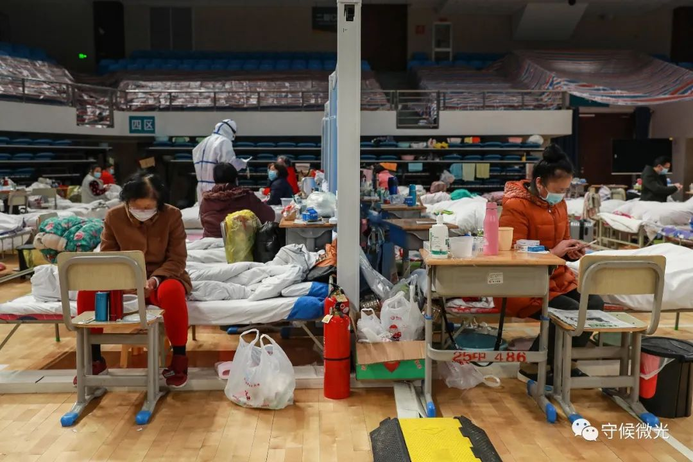
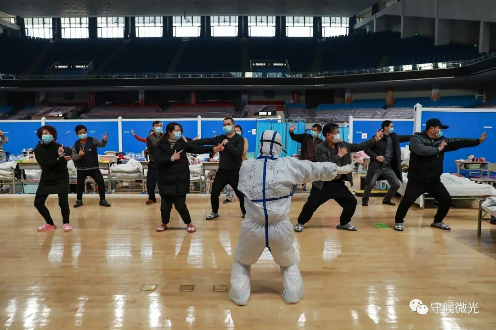
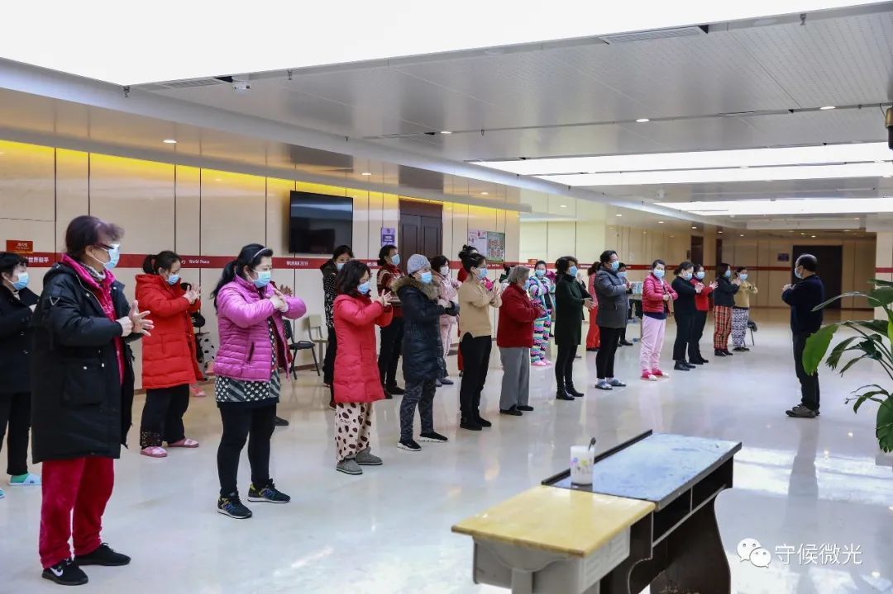
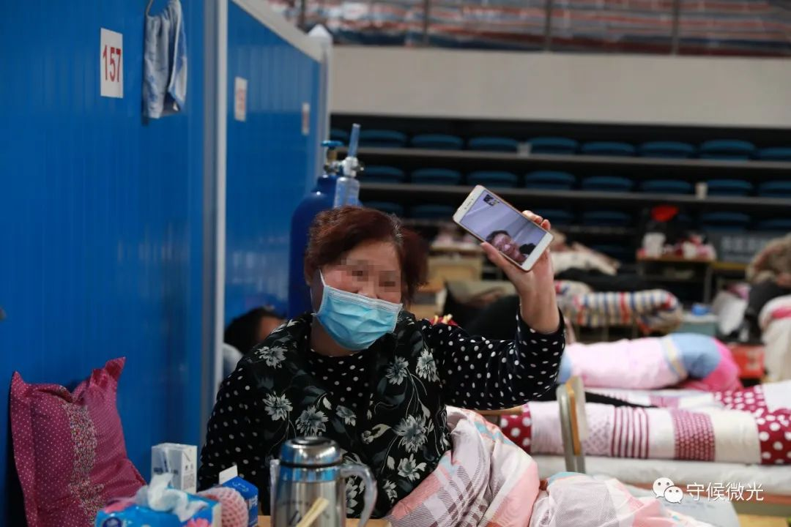
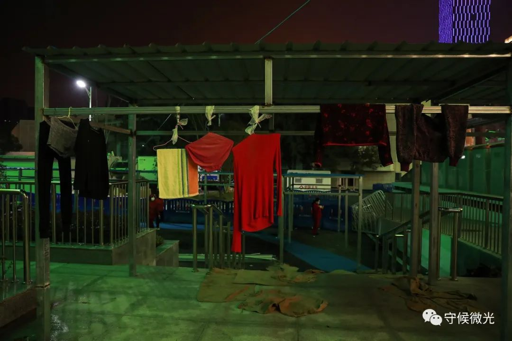
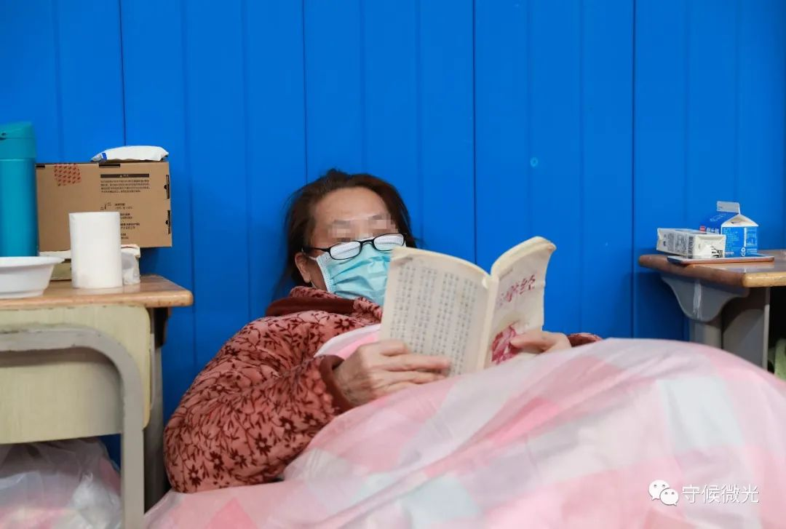
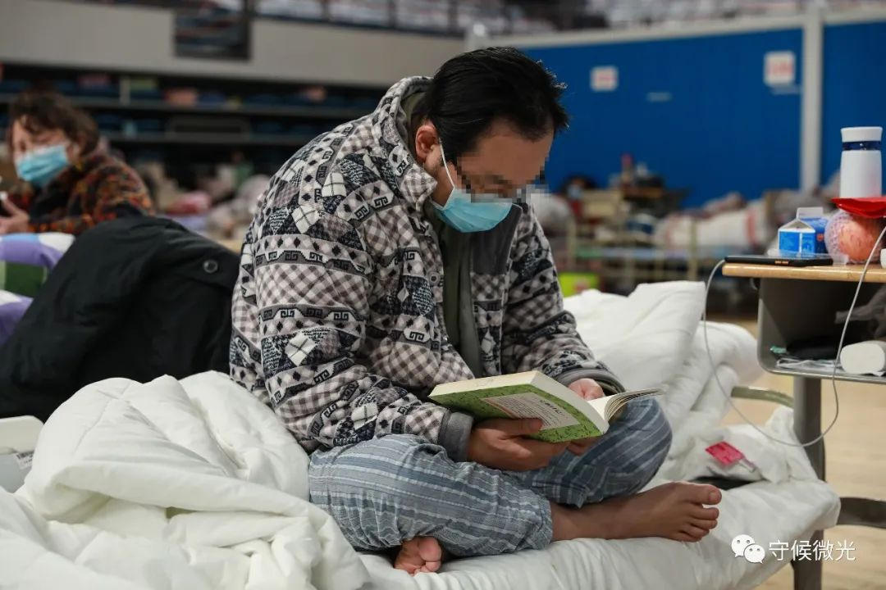
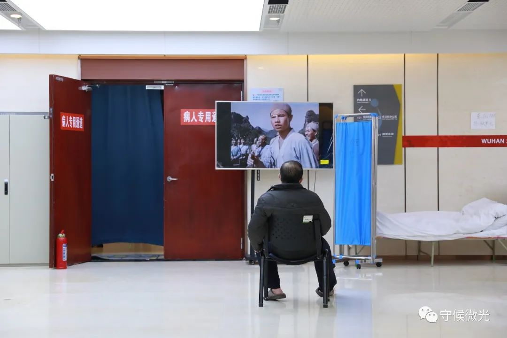
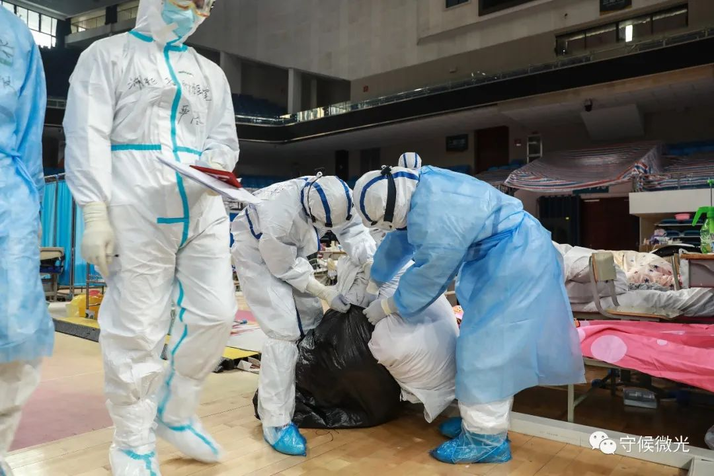

300秒回顾武汉战疫，数读封城后的武汉之变
原文链接 备份链接 经历了“封城”一个月的武汉，到底怎么样了? 全文2100字，阅读约需4分钟 点击下图进入阅读新京报特别策划 *数据新闻编辑 **陈华罗、李媛 新媒体设计 高俊夫、李亚珍 校对 何燕* ▲300秒回顾武汉战疫：宏大数 …
最早认识武汉是从池莉的小说开始的，烟火味、人情味十足。去过武汉，也就理解了她怎么能写出嘈杂的市井，是三镇的布局、是长江的流淌、是九省通衢的历史。如今，方舱里人间烟火正浓。
一位患者眼中的洪山体育馆方舱医院。周莉/拍摄 孔斯琪/剪辑
采访/中国青年报 鲁冲 孔斯琪 通讯员 罗俊华
写文/鲁冲
武汉洪山体育馆方舱医院安置着800张床位，烟火气正弥漫在方舱的每个角落。这里的新冠肺炎轻症患者从一开始恐惧担忧、寝食不安，到如今能够唱歌跳舞、泡脚唠嗑。
看台上挂的衣服、饭菜里冒的热气、病床间的家长里短、图书角里的翻书声……生活气息在方舱的细节中打开，生活的秩序在这重建。

2月21日，武汉市洪山体育馆方舱医院A区内，一名高三学生患者的桌子里放满了书本，墙上贴着的便签是她手写的课程表。晚餐期间每人一份苹果和牛奶，邻床患者将自己那份也送给了她。中青报·中青网见习记者 鲁冲/摄
活动区里，无论电视上播放什么歌曲，三位大爷都能跟着节奏律动起来，脚步跟不上节奏就快速扭动上半身。旁边泡脚的大爷也忍不住了，泡脚盆里溅起了水花。大家一起享受着音乐，舞姿各异也不觉得别扭。

2月21日，武汉市洪山体育馆方舱医院A区内，挡板将病区分成了若干个小区域。 中青报·中青网见习记者 鲁冲/摄

2月21日，武汉市洪山体育馆方舱医院A区内，青海省海东市互助县中医院高晓燕护士（前）正在带患者练习八段锦。中青报·中青网见习记者 鲁冲/摄

2月21日，武汉市洪山体育馆方舱医院A区内，“组长”张明（化名，右一）正在带领患者做健肺操。A区内会细分出各个区域，每区域选一位患者当组长，负责协助医护人员统计、拿饭、上报情况等等。中青报·中青网见习记者 鲁冲/摄

2月21日，武汉市洪山体育馆方舱医院A区内，一名患者正在与家属视频通话，给家属看方舱医院里面的情况。中青报·中青网见习记者 鲁冲/摄
2月21日，武汉市洪山体育馆方舱医院A区内，刘梅（化名）在直播，她的观众基本上都是家人朋友。中青报·中青网见习记者 鲁冲/摄

2月21日，武汉市洪山体育馆方舱医院A区外，“晾衣杆”上挂满了衣服。中青报·中青网见习记者 鲁冲/摄
方舱不是孤岛，人们在手机上消磨着时光。有患者将手机屏幕转向外，让屏幕里的家人看看自己的生活环境；有人在直播平台上给数量不多的粉丝直播自己的近况；还有人躺着刷起了短视频，屏幕那头的陌生人同样戴着口罩。
一位今年马上高考的高三学生患者，在墙上贴着手写的课程表，床头桌里塞着满满的书本。她的父母也被确诊了，此前因为离家近的洪山体育馆床位满员，住进了另一所方舱医院。后来洪山方舱有患者出院空出了床位，这时候女孩也确诊了，便在社区的安排下独自入住。在电话里听女儿说旁边的叔叔阿姨都很关照，女孩的父母感到放心。
已经康复的张明和刘梅由于没能赶上出院车辆，只能次日再出院。刚回到方舱医院里，病友们便关心起来：“你们不是今天出院吗，怎么又回来了？”还沉浸在失落中的刘梅立马开玩笑说，“舍不得你们啊，等明天和你们一起出院哈”。作为院内小分区的“组长”，每到晚上7点半，张明准时带着20多个病友到活动区做健肺操。白天病友们还在商量着，张明出院了晚上活动谁来安排。
周莉的丈夫2月初被确诊为新冠肺炎，作为疑似患者的她也在不久后被收治进洪山体育馆方舱医院。因为症状较轻，周莉担任起了“组长”的工作，负责为临近病区的14位患者分发一日三餐、领取生活物品。有一天中午，方舱医院来了一批新的病人，原本刚好的饭菜不够，周莉将自己的饭菜让给同组年龄大的患者先吃，她自己下午一点半才吃上午餐。“虽然微不足道，但我想为大家早日‘出舱’尽一份力。”周莉说。
照顾病友之余，周莉还一直在微博上更新“方舱日记”，记录他们夫妻二人的“战疫”之路。2月21日，在两次核酸检测结果都显示阴性后，周莉终于达到出舱标准。她在微博上发出了与医生和病友们的合影：“待春暖花开，一一谢过。”出院后她将继续居家隔离，与14岁的孩子一起，耐心等待丈夫的痊愈。

2月21日，武汉市洪山体育馆方舱医院A区内，医护人员在给病患测量血压。中青报·中青网见习记者 鲁冲/摄

2月21日，武汉市洪山体育馆方舱医院A区内，患者在医护人员处领取口罩。中青报·中青网见习记者 鲁冲/摄

2月21日，武汉市洪山体育馆方舱医院A区内，摆放着社会公益组织捐赠的书籍。中青报·中青网见习记者 鲁冲/摄

2月21日，武汉市洪山体育馆方舱医院A区内，一名患者在看《三字经》。中青报·中青网见习记者 鲁冲/摄

2月21日，武汉市洪山体育馆方舱医院A区内，一名患者在看《安妮日记》。中青报·中青网见习记者 鲁冲/摄

2月21日，武汉市洪山体育馆方舱医院A区内，一名患者在看电视。中青报·中青网见习记者 鲁冲/摄

2月21日，武汉市洪山体育馆方舱医院A区内，两名患者躺在床上看手机。中青报·中青网见习记者 鲁冲/摄

2月21日，武汉市洪山体育馆方舱医院A区内，一名患者在泡脚，他准备换上新的袜子。中青报·中青网见习记者 鲁冲/摄

2月21日，武汉市洪山体育馆方舱医院A区内，一名患者在吃晚饭。中青报·中青网见习记者 鲁冲/摄

2月21日，武汉市洪山体育馆方舱医院A区内，医护人员在收拾出院病人的床上用品。接下来，他们会换一整套全新的床上用品。中青报·中青网见习记者 鲁冲/摄

2月21日，武汉市洪山体育馆方舱医院A区内，保洁人员正在对垃圾进行消毒处理。中青报·中青网见习记者 鲁冲/摄

2月21日，武汉市洪山体育馆方舱医院A区内，湖北省肿瘤医院医生严浩正在翻看病患群里的消息。中青报·中青网见习记者 鲁冲/摄

2月21日，武汉市洪山体育馆方舱医院A区内，心愿墙上贴满了患者的寄语。
活动区里，一面心愿墙上贴满了五颜六色的便签纸：“热干面加油，面窝加油，豆浆加油”“越是瘟疫越向前，医患一起扛肺炎”“艰难岁月，我们一起走过”……患者在这里短暂停留，情感却是加速连结。
随着疫情发展，武汉各地陆续投入建设方舱医院，用于收治新冠肺炎轻症患者。截至2月21日，已有13所开舱，可提供救治的床位达到13348张，已有72支援助武汉的医疗队入驻，前期存在的患者收治难问题已得到有效解决。未来，武汉预计再建19所方舱医院，同时确保每个方舱医院CT全覆盖。专门为方舱医院设计的“方舱CT”可以大大提高检测速度，平均两分多钟就能扫描一位患者，无接触的操作也可降低医护人员的感染风险。
身在方舱，生活在继续；走出方舱，生活仍要继续。
（为保护患者隐私，部分照片进行了打码处理，文中部分患者名为化名）
编辑 | 曲俊燕
中国青年报·中青在线出品
微信编辑 | 陈轶男

觉得好看请点这里
原文链接 备份链接 经历了“封城”一个月的武汉，到底怎么样了? 全文2100字，阅读约需4分钟 点击下图进入阅读新京报特别策划 *数据新闻编辑 **陈华罗、李媛 新媒体设计 高俊夫、李亚珍 校对 何燕* ▲300秒回顾武汉战疫：宏大数 …
原文链接 备份链接 一场疫情，让小余一家分离三地。但他依旧认为，自己是不幸的人中，幸运的那个。作为婚纱摄影师的他，如今在方舱里给大家拍照片。他很高兴，“在这样很苦的事里，大家都能表现出一种乐观”。 文 | 吴美芬 小余今年30岁，是一位婚 …
原文链接 备份链接 住进武昌方舱的第二天，付丹看到有人在垃圾站收拾，将在地上扔得乱七八糟的垃圾捡起来放到垃圾箱里。她感到有些奇怪，清洁工怎么没有穿防护服呢。一问，原来那人是住在同一个病区的病友，住在159号床。 文***｜******* …
原文链接 备份链接 澎湃新闻记者 林平 2月21日下午，湖北省新型冠状病毒肺炎疫情防控工作指挥部召开第29场新闻发布会，介绍武汉市疫情防控工作落实情况，并重点围绕救治和阻隔两大关键环节中的举措和进展，回答记者提问。 有记者提问，武汉市宣布 …
原文链接 备份链接 跳广场舞、练瑜伽、打太极、复习备考……每天我们都能从社交媒体上了解到武汉“方舱医院”内患者们的日常生活。这些看似平常的活动，却为紧张的抗疫工作带来了一丝活力与鼓舞。 2月3日晚，武汉市宣布将在武汉国际会展中心、洪山体育 …